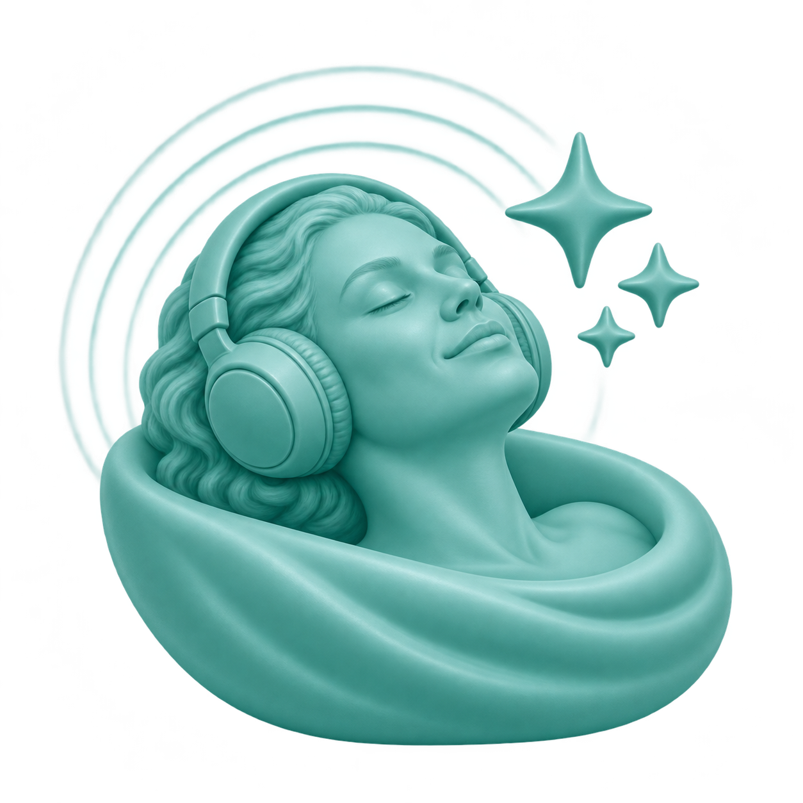

Иммерсионная ванна (сухой флоатинг)
Автоматизированный водно-иммерсионный комплекс «МЕДСИМ»

Короткая презентация гостю
Если после насыщенного дня хочется спокойно отдохнуть, могу предложить сухую иммерсию. Вы лежите в мягком коконе, а тёплая вода поддерживает тело через оболочку. Ощущение похоже на невесомость, и вы остаётесь сухими. Приглушённый свет, проекция звёзд и музыка помогают спокойно отдохнуть. Сеанс длится 60 или 90 минут. Хотите, уточню время сеанса?
Что представляет собой процедура
Иммерсия означает «погружение» (англ. immersion). «Сухой» её называют потому, что тело погружено в водную среду через оболочку и остаётся сухим. Процедура проходит в специальной ванне с подогретой водой. Гость располагается на подъёмной платформе и укрывается мягким водонепроницаемым пологом. При опускании платформы вода через оболочку поддерживает тело с разных сторон. Лицо остаётся открытым, кожа не соприкасается с водой.
В нашей клинике температура воды составляет около 33 °C. Мягкий водный кокон, приглушённое освещение и проекция звёздного неба помогают отдохнуть от потока мыслей и повседневных забот. По характеру ощущений такой отдых близок к медитации: можно закрыть глаза и никуда не спешить.
Как работает сухая иммерсия
Основной принцип — опорная разгрузка: изменение привычной нагрузки на тело и ощущений опоры. Вода поддерживает человека через гибкую оболочку, уменьшая необходимость удерживать позу за счёт мышечного напряжения.
Так появляется ощущение лёгкости и «парения». Мышцы, участвующие в поддержании позы, получают возможность расслабиться, а привычные границы между телом и поверхностью под ним ощущаются иначе.
Метод разработан в Москве, в Институте медико-биологических проблем (ИМБП), в начале 1970-х годов, для изучения отдельных воздействий невесомости на организм. Сегодня это ИМБП Российской академии наук. Сухую иммерсию применяют также в восстановительных и реабилитационных программах.
Зачем попробовать
- Почувствовать телесную лёгкость. Распределённая водная поддержка меняет привычное ощущение собственного веса.
- Снять повседневное напряжение. Условия опорной разгрузки способствуют расслаблению мышц, участвующих в удержании позы.
- Переключиться после насыщенного дня. Здесь можно отложить телефон, закрыть глаза и уделить внимание дыханию, звуку и собственным ощущениям.
- Открыть для себя другой формат отдыха. Водный кокон, звёздное небо и музыкальное сопровождение объединяются в особый опыт — личный космос среди алтайских гор.
В восстановительной медицине сухую иммерсию включают, например, в программы:
- Работы с повышенным мышечным тонусом — избыточным напряжением мышц при неврологических заболеваниях, в том числе в реабилитации после инсульта.
- Реабилитации при заболеваниях позвоночника с болевым синдромом — как одну из методик, направленных на разгрузку и мышечное расслабление.
- Реабилитации при болезни Паркинсона — в составе индивидуально подобранной программы.
Это примеры медицинского применения метода. Подходящую задачу и сочетание с другими процедурами определяет специалист.
Звуковое погружение
Музыка дополняет физические ощущения от процедуры. Протяжённые тоны и музыкальный рисунок создают обволакивающее звуковое пространство для медитативного отдыха.
В нашей подборке представлены записи с обозначениями частот от 111 до 1111 Гц. В используемой звуковой практике выделяют:
- 174–963 Гц — «Частоты Вознесения». Используются в практиках сосредоточения на внутреннем состоянии и саморегуляции.
- 111–1111 Гц — «Частоты Света». Подборка включает записи с обозначением 432 Гц. Используются для медитации, отдыха и творчества.
Духовная основа этой практики связана с представлением о резонансе звука с чакрами — энергетическими центрами в духовных традициях, через которые описывают жизненную силу, внутреннее равновесие и гармонию.
Во время сеанса можно направить внимание на дыхание и звучание, отпустить привычку постоянно следить за временем. По наблюдениям сотрудников, гости нередко отмечают, что даже полтора часа проходят удивительно незаметно.
Продолжительность и подготовка
В прейскуранте клиники предусмотрены сеансы 60 и 90 минут. Подходящую продолжительность и возможность проведения уточняет медицинский специалист.
Перед первым посещением сотрудник объяснит особенности размещения, подготовки и способ связи во время сеанса. Для комфорта лучше выбрать лёгкую одежду или нижнее бельё; в клинике также предоставляют одноразовый массажный комплект для мужчин и женщин. О заболеваниях, недавних операциях и текущем недомогании необходимо сообщить заранее.
Ограничения и самочувствие
Сухая иммерсия имеет противопоказания. В методических материалах среди существенных ограничений указаны острый инфаркт, отдельные серьёзные нарушения сердечного ритма, тромбозы и тромбофлебиты, обострения заболеваний лёгких, а также состояния с выраженным уменьшением объёма циркулирующей крови.
Возможность проведения оценивает медицинский специалист. Администратор помогает с записью, но не определяет допуск по перечню заболеваний.
Во время сеанса о головокружении, тошноте, тревоге или другом дискомфорте нужно сразу сообщить сотруднику.
Ощущение тесноты. Укрывание пологом иногда вызывает тревогу, напоминающую клаустрофобию — страх замкнутого пространства. Если такое ощущение вам знакомо, предупредите сотрудника до начала сеанса: с ним можно заранее обсудить степень укрывания и допустимый вариант размещения. Терпеть дискомфорт не нужно.
Частые вопросы
В какой одежде приходить?
Для сеанса удобнее лёгкая одежда или нижнее бельё. При необходимости мы предоставим одноразовый массажный комплект для мужчин или женщин. В плотной одежде и гостиничном халате может быть жарко: внутри водонепроницаемого покрытия некоторые гости потеют.
Я намокну?
Нет. Вода поддерживает тело через водонепроницаемую оболочку, прямого контакта кожи с водой нет.
Это настоящая невесомость?
Это ощущение, возникающее благодаря водной поддержке и изменению привычной опоры. Сила тяжести сохраняется.
Что я почувствую?
Мягкую поддержку тела с разных сторон, лёгкость и необычное ощущение «парения». Кто-то спокойно слушает музыку, кто-то погружается в дремоту.
А если мне некомфортно лежать в «коконе»?
Расскажите об этом сотруднику до начала процедуры. Он обсудит с вами подходящее размещение; если тревога возникнет во время сеанса, сразу сообщите о ней.
Можно прийти на один сеанс?
Да, одно посещение позволяет познакомиться с процедурой и собственными ощущениями. Если она входит в лечебную программу, последовательность посещений определяет специалист.
Заменяет ли процедура сон?
Она дополняет отдых и помогает выделить время для расслабления. Полноценный ночной сон остаётся необходимым.